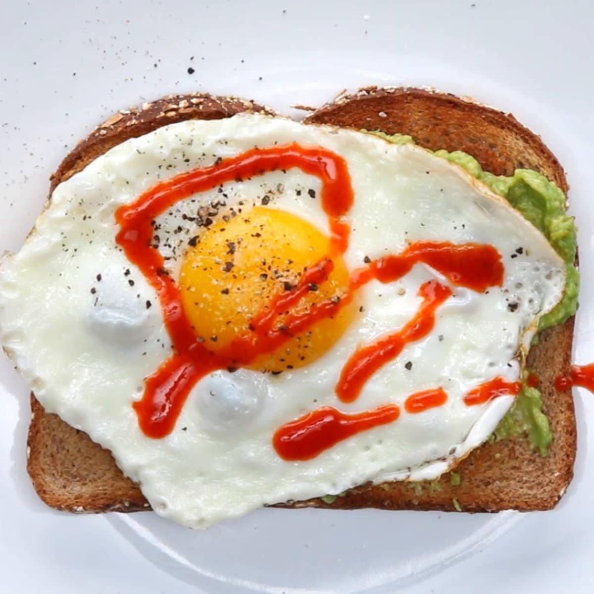

World's Greatest Breakfast

Fried Egg on Toast w/ a Dip Spread
"Why can't dip be a meal?"
- David Puddy
Everyone loves a good dip but societies conventions have long shamed those who want to make it a meal. This breakfast option uses a Chipolte Cream Cheese dip to enhance a breakfast classic.
Ingredients
- 1 piece of Toast
- 1 Egg
- Salt to taste
- 1 shake of Everything Bagel Seasoning
- Drizzle of Sricha Sauce
Chipolte Cream Cheese Dip
- 8 oz. Cream Cheese softened
- 1/2 cup Sour Cream (or plain Greek Yogurt)
- 1 tsp. Garlic Powder
- 1 tsp. onion Powder
- 2 tablespoons of a blended can of Chipolte Peppers in Adobe
Steps
- In a medium bowl combine the ingredients for the Chipolte Cream Cheese Dip and mix thouroughly with an imersion blender
- On a small sauce pan begin to fry egg to preference salting as prefered.
- Toast bread
- When toast is complete spread with approximately 1/6th of Chipolte Cream Cheese Dip
- When egg is complete place on top of bread with spread
- Add a shake of Everything Bagel Seasoning and a drizzle of Sricha